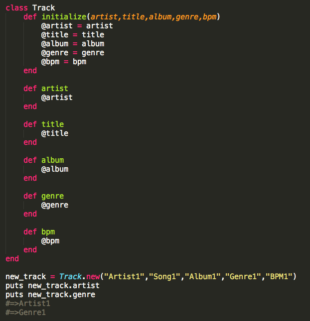
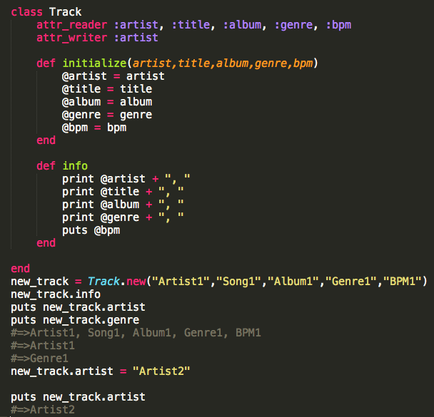

- student: DBC
- mkt mgr + product liaison: TRLA
- timcannady@gmail.com
- twitter.com/tcannadysf
- linked.com/in/timcannady
- github.com/timcannady
Classes
Understanding Ruby Classes
"Classes are super powerful, and I love them."
That should be how you feel when someone mentions classes in Ruby - that they're super powerful, and you love them!
Humans like things to make sense, and we go to some pretty big lengths to make sure they do! We explore, poke and prod. We create languages so we can make sense of our findings, and we create names so we can tell things apart. For example, humans and dog are both "things". They're both living things, and they're both mammals. And both like being pet.
Like comparing and contrasting two mammal, classes in Ruby allow us to create objects that come pre-packged with specific traits, including those they inherit - similar to how a dog and human inherit traits from the mammal 'class'. Let's take a closer look by creating a class together.
Let's say we run a website that specializes in music downloads. We'll need a way to categorize and organize the tunes. Classes to the rescue! We could create a generic object for each song, but guess what? Object.new is just creating a new object of the class Class . There's nothing generic about music, so let's learn how we can create a class called "Track". That way, we can call .new on it and have each song come pre-packaged with track-like attributes.
Here we define a class called Track. Our new class is empty, so let's give it a method called 'title' that takes no arguments and simply returns "I'm empty." After that we create a new instance of a track and name it 'new_track'. Then we call our new method on our new track. From our new Track class!

Here we give the class a method called 'initialize'. Initialize is a special method and is used when we want each instance of our class to be "initialized" with certain attributes upon creation. All songs need a title, so lets be sure every instance of Track is initialized with one. We assign 'title' equal to a funny looking variable called @title. Recall local variables disappear as soon as their method completes. We wouldn't want that to happen to our title attribute, so we use something called instance variable - all of which begin with the "@" symbol. That way it can be accessed from anywhere in the program - and at any time. Next, we define a method called 'info'. This will eventually output the track's info. We finish up by passing in a track name, "Song1", and then calling the info method on our new track:

A song should have more info than a title. We first expand the 'initialize' method to accept more arguments. Then we create individual methods so the user can read each attribute. We finish by creating a new track, passing in some info and then calling one of our methods on our new track:

That's all said and good, but it's a lot of work to make the user manually access each attribute. Let's add a method called 'info' that reads all the attributes in one go:

You might be intimidated by how quickly our class has grown. And all just to store a few attributes. Fear not, Ruby to the rescue. If you notice your class methods are doing one thing, it's likely that they're either "reading" or "writing". For example, our artist method simply "reads" its value to the user. In cases like these we can tidy things up by using 'attr_reader' and 'attr_writer'. Notice the single-task methods have been absorbed into the 'attr_reader' section at the top. The functionality is the same:

Ruby also rescues us from our single-use "write" statements. In this example we didn't create any methods to write with, but note at the bottom where we try to update the 'artist' variable from "Artist1" to "Artist2" and the error it returns. This is because we haven't taught our Track class how to accept this kind of update. Remember: a computer program does exactly what you teach it - and no more!

We address this by adding 'attr_reader' to the top. Alas, our attempt to "write" works. Ruby also offers another tool called 'attr_accessor'. Use this as a shortcut for attributes that you'll allow for both reading and writing. I specifically use the term "allow" because the accessor tool might seem convenient, but it can cause headache - and even abuse - if not used sparingly:

With that we've learned how to:
- Define a new class
- Initialize each instance with attributes
- Define instance variables
- Define methods inside classes
- Create attribute readers, writers and accessors
- Create an instance of a custom object
- Call custom methods on it
This is just a basic overview of classes, akin to a song's title being a mere glance at the song itself. One major topic we didn't cover includes "inheritance", for example how our track might inherit from a parent class called 'Music', along with its methods to start/pause/stop. Another topic is how classes can share and communicate their attributes with one-another. Finally, and one of the most important, is how to "mixin Enumerable", which is how we can teach our classes to be enumerable. See my post here for a little more info on enumeration.
I hope this has been a helpful glimpse at the power of classes. For extra reading I recommended Chapter Three of The Well-Grounded Rubyist.